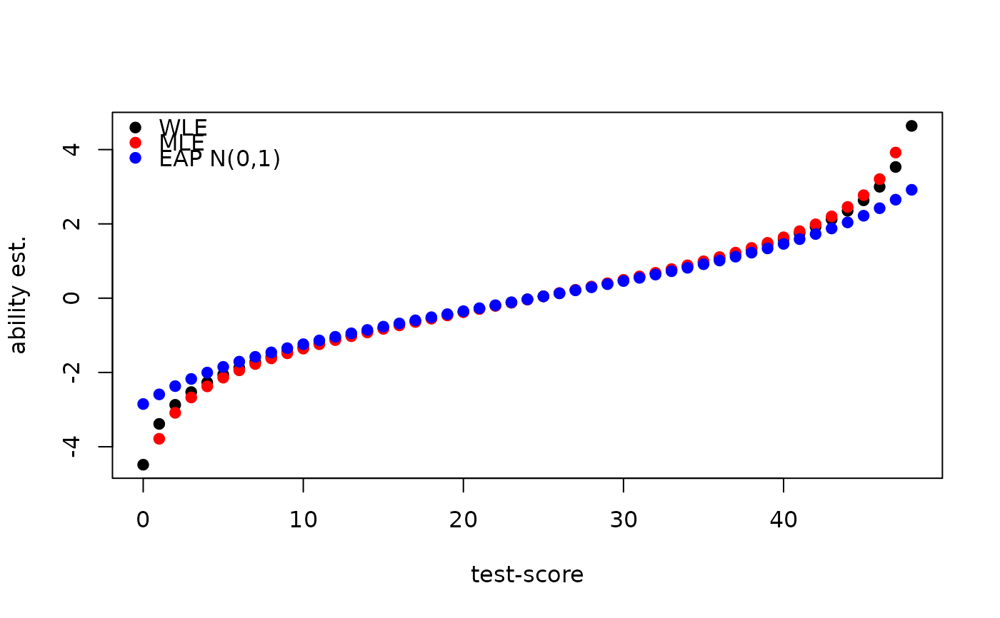

Computes estimates of ability for persons or for booklet scores
ability(
dataSrc,
parms,
predicate = NULL,
method = c("MLE", "EAP", "WLE"),
prior = c("normal", "Jeffreys"),
parms_draw = "sample",
mu = 0,
sigma = 4,
merge_within_persons = FALSE
)
ability_tables(
parms,
design = NULL,
method = c("MLE", "EAP", "WLE"),
prior = c("normal", "Jeffreys"),
parms_draw = c("sample", "average"),
mu = 0,
sigma = 4
)a connection to a dexter database, a matrix, or a data.frame with columns: person_id, item_id, item_score
object produced by fit_enorm or a data.frame with columns item_id, item_score and,
beta
An optional expression to subset data, if NULL all data is used
Maximum Likelihood (MLE), Expected A posteriori (EAP) or Weighted Likelihood (WLE)
If an EAP estimate is produced one can choose a normal prior or Jeffreys prior; i.e., a prior proportional to the square root of test information.
When parms is Bayesian, parms_draw can be the index of the posterior sample of the item parameters that will be used for generating abilities. If parms_draw='sample' ability estimates are estimated over all draws and averaged. Rubin's rule is used to combine the imputaiton variance and sampling variance. If parms_draw='average', the posterior mean of the item parameters is used.
Mean of the normal prior
Standard deviation of the normal prior
for persons who were administered multiple booklets, whether to provide just one ability value (TRUE) or one per booklet(FALSE)
A data.frame with columns item_id and optionally booklet_id. If the column booklet_id is not included, the score transformation table will be based on all items found in the design. If design is NULL and parms is an enorm fit object the score transformation table will be computed based on the test design that was used to fit the items.
a data.frame with columns: booklet_id, person_id, booklet_score, theta and optionally se (standard error)
a data.frame with columns: booklet_id, booklet_score, theta and optionally se (standard error)
MLE estimates of ability will produce -Inf and Inf estimates for the minimum (=0) and the maximum score on a booklet. If this is undesirable, we advise to use WLE. The WLE was proposed by Warm (1989) to reduce bias in the MLE and is also known as the Warm estimator.
Warm, T. A. (1989). Weighted likelihood estimation of ability in item response theory. Psychometrika, 54(3), 427-450.
db = start_new_project(verbAggrRules, ":memory:")
add_booklet(db, verbAggrData, "agg")
#> no column `person_id` provided, automatically generating unique person id's
#> $items
#> [1] "S1DoCurse" "S1DoScold" "S1DoShout" "S1WantCurse" "S1WantScold"
#> [6] "S1WantShout" "S2DoCurse" "S2DoScold" "S2DoShout" "S2WantCurse"
#> [11] "S2WantScold" "S2WantShout" "S3DoCurse" "S3DoScold" "S3DoShout"
#> [16] "S3WantCurse" "S3WantScold" "S3WantShout" "S4DoCurse" "S4DoScold"
#> [21] "S4DoShout" "S4WantCurse" "S4WantScold" "S4WantShout"
#>
#> $person_properties
#> character(0)
#>
#> $columns_ignored
#> [1] "gender" "anger"
#>
f = fit_enorm(db)
mle = ability_tables(f, method="MLE")
eap = ability_tables(f, method="EAP", mu=0, sigma=1)
wle = ability_tables(f, method="WLE")
plot(wle$booklet_score, wle$theta, xlab="test-score", ylab="ability est.", pch=19)
points(mle$booklet_score, mle$theta, col="red", pch=19,)
points(eap$booklet_score, eap$theta, col="blue", pch=19)
legend("topleft", legend = c("WLE", "MLE", "EAP N(0,1)"),
col = c("black", "red", "blue"), bty = "n",pch = 19)

close_project(db)